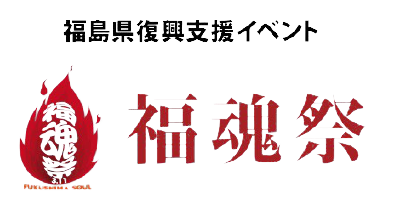
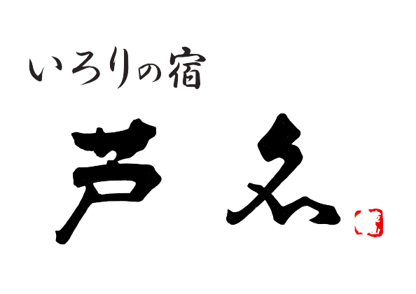

なぜやるのか
福島では、学生が地元の魅力を全く「知らない」「気づいていない」という現状があります。私たちSFFは、福島の学生に地元の魅力を知ってもらいたいと思い、若者の強みであるSNSでの発信を通じて、福島の魅力を全国・世界に拡散したいです。
震災当時、小中学生だった私たちが中心となり震災から10年たった今、福島の学生が地元・福島の未来を明るく照らします。
【福島の魅力を全国・世界へ】 Twitter トレンド1位への挑戦
実行時間：20:00 ~ 20:15
福島といえば、震災・原発・放射線といったマイナスイメージではなく、あなたの発信によって福島県がプラスイメージを持ってもらえるように、「#福島から広めよう」をつけて明るい発信を一緒にしましょう！！
福魂祭 with SFF
前半：福魂祭 13:30 ~「福魂祭 Youtube チャンネル」 / 後半：SFFイベント 17:00 ~ 「SFF Youtube チャンネル」
福魂祭とは・・・明日へ向かって、歩みを進める。
3.11東日本大震災では、約2万人の尊い命が失われました。福島では、地震、津波に加え、原発事故、風評被害の4重苦に今なお苦しめられています。
そんな中、福島を想う地元の有志が⋯⋯亡くなられた人々へ鎮魂を捧げ、温かな救済の手を差し伸べていただいた全ての人々へ感謝し、絶対に福島を復興させる決意の再生イベントを行っていこう！
と立ち上がり鎮魂祭を開催してまいりました。今回で10回目を迎えます。3.11には、たくさんの皆さんが一堂に会し「鎮魂」・「感謝」・「再生」の思いを共有して、
また、明日へ向かって歩みを進める原動力となるイベントを開催したいと思います。
SFF イベントスケジュール
- 17:00 ~ 17:10
- オープニング
- 17:10 ~ 18:30
- 『#福島から広めよう』特別音楽 LIVE/ 福島にゆかりがあるアーティストによる特別コンテンツ
- 18:35 ~ 18:55
-
フォトコンテスト 発表 / スポンサー企業紹介
Instagram 部門発表 / スポンサー企業紹介 - 19:00 ~ 19:25
-
「#福島から広めよう」SFFオリジナルソングを披露
シンガーソングライターとしてプロデビュー予定の
福島市出身24歳女性シンガー - 19:30 ~ 19:55
-
フォトコンテスト 発表 / スポンサー企業紹介
Twitter 部門発表 / スポンサー企業紹介 - 20:00 ~ 20:15
-
「#福島から広めよう」で一緒にツイートをしよう！
(Twitterトレンド一位への挑戦)
 ツイートする
ツイートする
- 20:15 ~ 20:25
- SFF発起人による「福島の夢」宣言
- 20:30
- 閉幕
夢を追うシンガーソングライター
福島の未来を歌います
福島市出身24歳 プロデビュー予定
女性シンガー当日登場
- 主催 -
- 後援 -
- 
-

-

- 
-

-

-